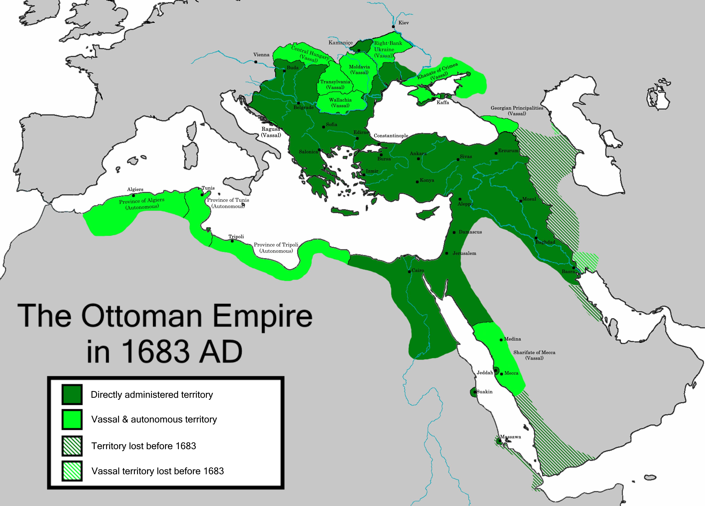

Volume II · 1299 — 1922
The empire that ruled Mecca and Athens, Algiers and Belgrade, Baghdad and Buda. At its peak it stretched from Algeria to Persia, from Yemen to Hungary. It lasted six hundred and twenty-three years and produced, on dissolution, twenty-eight successor states.
Foreword
Most modern readers, asked to imagine the Ottoman Empire, think of Istanbul. They are not wrong; they are looking at the third of the empire's three capitals, the last of them, and the only one whose name survived.
The first Ottoman capital was Söğüt, an obscure town in the Anatolian foothills, where in the late thirteenth century a Turkic chieftain called Osman built a small frontier state on the disintegrating edges of the Seljuk Sultanate of Rum. The second was Bursa, then Edirne, captured in 1326 and 1361 respectively, the latter held for nearly a century as the empire pushed deeper into the Balkans. The third was Constantinople, taken on the 29th of May 1453 by a twenty-one-year-old sultan whose name — Mehmed the Conqueror — became one of the most famous in Islamic history. The city was renamed by its conquerors, slowly, over the next four centuries; the change from Constantinople to Istanbul, despite popular belief, was not formal until 1930, eight years after the empire that had taken it ceased to exist.
What lay between Söğüt and the abolition of the sultanate in 1922 was the longest continuous Islamic dynasty in history. Thirty-six sultans, all of them descended in unbroken male line from Osman himself. A standing army of slave-soldiers — the Janissaries — that was the most-feared infantry in Europe for two centuries. A legal code that governed Muslims, Christians, and Jews under distinct but parallel jurisdictions. A bureaucracy run in Turkish, Persian, and Arabic, occasionally in Greek, and corresponded with foreign powers in French. A navy that ruled the Mediterranean between 1500 and 1571. A territory that, at its largest extent under Süleyman the Magnificent in the 1560s, stretched from the Atlas Mountains to the Caspian Sea.
This volume is a guide to that empire, and to the places — in Turkey, in Greece, in the Balkans, in Egypt, in the Levant, in North Africa — where it can still be found. Read straight through, the chapters tell the story of how the empire rose, peaked, slowly contracted, modernised in haste, lost a world war, and was, finally, unmade by a young general from Salonika who knew the system from the inside.
"I, by the grace of God, am king of kings, ruler of rulers, Sultan of the two lands and the two seas — and I command you." — Süleyman the Magnificent, in a letter to King Francis I of France, 1526

The Book — ten chapters
After the book
The Guide
Istanbul, of course — but also Bursa, Edirne, Salonika, Sarajevo, Damascus, Cairo, Algiers, and Mostar. Where the empire can still be found.
The Routes
The Three Capitals route. The Balkan route, north along the old Stambul road. The Aegean route, through the Greek islands and the Anatolian coast.
The Errors
No, the Ottomans did not capture Constantinople because of an unlocked gate. The empire was not "the sick man of Europe" from 1683 onward. Ten misconceptions corrected.